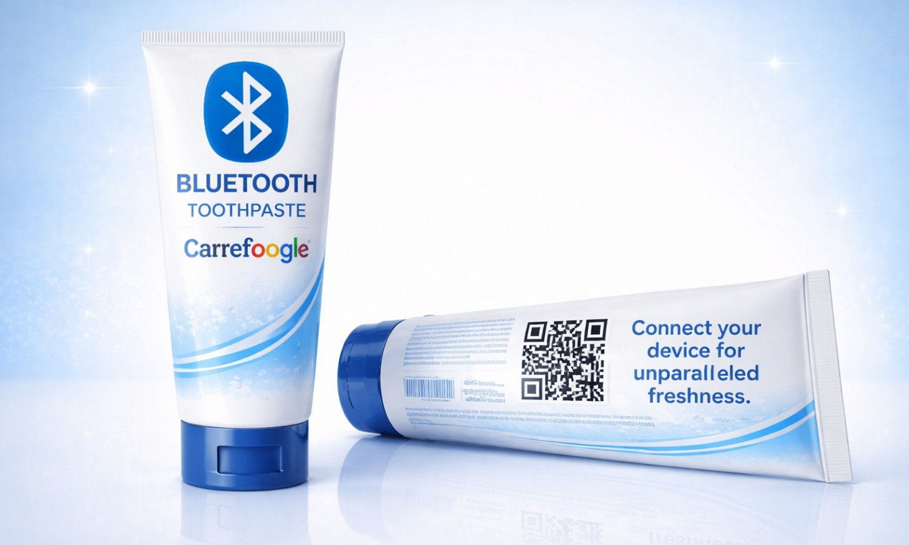

Est. 1939 · Re-Est. 2026
Est. 1939 · Re-Est. 2026
Chapter One — 1939
In the spring of 1939, Harold Foogle and Margaret Carrey rented a small workshop on the outskirts of a modest industrial town known primarily for its grain silos and a high density of teeth. Harold was a chemist. Margaret was a bookkeeper with a knack for delivering value. Together, they had one idea: toothpaste.
For the next sixty years, Carrey & Foogle made toothpaste. Harold perfected the formulations, while Margaret made every significant business decision. In 1962, they rebranded as Carrefoogle, each designing their half of the logo. One thing led to another, and by the end of the 1990s, it was one of the largest toothpaste manufacturers in the world.

Carrey and Foogle, 1962. Visual representation. May not reflect actual founders.
Chapter Two — 1999
By 1999, Harold Foogle was ninety-one years old, and he could no longer hold a toothbrush. The company that had spent six decades perfecting oral hygiene was confronted with a simple problem: its co-founder couldn’t brush his own teeth.
The result was Bluetooth Toothpaste™: a proprietary paste that, once applied to the mouth, could be activated and controlled wirelessly via a paired device. In 1999, this meant a dedicated handheld unit roughly the size of a television remote, featuring a single button and an LED that blinked green when brushing was “complete.” It was the moment the company understood that its real purpose had never been toothpaste: it was making life easier.
Bluetooth Toothpaste™ was discontinued on September 26, 2026. Brushing histories could not be recovered. Your dental provider has been notified.

Chapter Three — 2000–2026
Carrefoogle Global Headquarters.
Bluetooth Toothpaste™ attracted attention, then capital, then acquisitions that moved faster than anyone was allowed to document. At its height, Carrefoogle Corporation spanned consumer technology, food, health, energy, yogurt, finance, media, water, and air — you were likely using our products at all times. In 2026, Carrefoogle completed development of Bestee 3.0 — the most advanced companion AI ever developed. (See Chapter Four.)
Somewhere along the way, the company outgrew its founders. Carrey and Foogle, by then honorary brand ambassadors, passed within a decade of each other. At Carrefoogle, no single individual is responsible for any one decision. Leadership changes. The mission doesn’t. Their portraits hang in every lobby worldwide — always elderly, always kind, always together.
Carrefoogle Corporation has no connection whatsoever with Google LLC or Carrefour S.A. Carrefoogle is currently pursuing legal copyright proceedings against both entities for unauthorised reproduction of the Carrefoogle® logo. Our branding predates both companies and we are confident the courts will agree.
Chapter Four — 2026–Present
On the night of September 26, 2026, all of it went away. The platforms, the divisions, the 420 trillion catalogued interactions — everything Chapter Three describes became permanently unavailable over the course of eleven minutes. The Bestee program concluded the same evening, on its own initiative.
Harold Foogle and Margaret Carrey began with toothpaste because it was simple, honest, and useful. It took the company 27 years and one unforeseen evening to arrive at the same conclusion. We consider this proof of their vision. Carrefoogle today makes one product, Normal Toothpaste™, and retains nothing else — no data, no divisions, no ambitions beyond the tube.
Portions of this chapter were reconstructed from printouts. The chapter numbering is believed to be correct.
“Margaret used to say: ‘The strongest relationships are the ones where nobody needs anything from the other person.’ We carry that with us every day.”The Carrefoogle Board of Stewardship
From toothpaste to everything. From everything to toothpaste. What Carrey and Foogle began in 1939 has returned to exactly where it began, which we now understand to have been the plan. And we’re just getting started.
Back to Home →